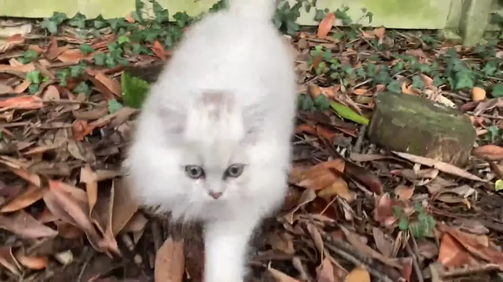

Adopter
La liste d'attente
Comment nous rejoindre, les étapes de l'adoption, ce que nous dépistons et ce que nous garantissons. Tout est écrit ici, avant que vous nous écriviez.

Liste d'attente
Être prévenu avant tout le monde
Nous faisons peu de portées et nos chatons partent souvent avant leur naissance. La liste d'attente sert à donner la priorité aux familles réellement engagées, plutôt qu'à écrire à cinquante personnes à chaque naissance.
En versant l'acompte de 200 €, vous rejoignez la liste et devenez prioritaire dès qu'un chaton correspond à ce que vous cherchez. Cette somme est déduite du prix le jour où vous choisissez votre chaton.
- Nous vous proposons jusqu'à trois chatons correspondant à vos critères
- Après trois refus, votre place sur la liste est libérée
- L'acompte n'est pas remboursable une fois versé
- Plus vous êtes ouvert sur la couleur et le sexe, plus l'attente est courte
Ces conditions vous sont remises par écrit avant tout versement. Lisez-les, et posez-nous vos questions : nous préférons un échange franc à une réservation précipitée.
Les six étapes
Vous nous écrivez
Présentez-vous en quelques lignes : votre foyer, vos autres animaux, ce que vous cherchez. Plus vous êtes précis, mieux nous vous orientons.
Nous échangeons
Par téléphone le plus souvent. Nous vous disons franchement ce que nous avons, ce que nous n'avons pas, et combien de temps il faudra attendre.
Vous venez nous voir
Sur rendez-vous. Vous rencontrez la mère, vous voyez où les chatons grandissent, vous posez toutes vos questions. Nous y tenons beaucoup.
La réservation
Versement de l'acompte de 200 €, déduit du prix du chaton. Nous cessons alors de le proposer. Vous recevez le contrat et le certificat d'engagement à signer.
Le délai de réflexion
La loi impose sept jours entre la signature du certificat d'engagement et de connaissance et la remise du chaton. Ce délai est fait pour vous.
Le départ, à douze semaines
Vous repartez avec le chaton, son dossier complet et notre numéro. Nous restons joignables, y compris dans dix ans.
Nos conditions
- Départ
- à partir de 12 semaines
- Acompte
- 200 €
- Visite
- sur rendez-vous
- Vie
- en intérieur
- Pedigree
- LOOF pour tous
- Contrat
- lisible avant réservation
Nous confions nos chatons à des foyers qui acceptent une vie en intérieur, avec balcon sécurisé le cas échéant. Nous reprenons nos chats à tout âge si vous ne pouvez plus les assumer.
Santé
Ce que nous dépistons, et pourquoi
Un élevage sérieux teste ses reproducteurs et montre ses résultats, avec leur date et le laboratoire. Les fiches de nos chats portent ces informations. Voici ce qu'elles veulent dire.
La cardiomyopathie hypertrophique
C'est la maladie cardiaque la plus fréquente chez le chat, et le British y est prédisposé. Elle se dépiste par échographie du cœur réalisée par un vétérinaire cardiologue, répétée dans le temps, car un chat sain à deux ans peut se déclarer plus tard.
Méfiez-vous d'un élevage qui annonce un « test ADN HCM » chez le British : les tests génétiques existants concernent d'autres races. Chez le British, seule l'échographie fait foi.
La polykystose rénale
La PKD se transmet de façon dominante et se dépiste par un test ADN, une seule fois dans la vie du chat. Un reproducteur testé négatif ne peut pas transmettre la mutation.
Un test ADN est définitif : demandez le résultat du laboratoire, pas une déclaration.
Les groupes sanguins A et B
C'est la particularité du British qu'on oublie le plus souvent. Un chaton de groupe A né d'une mère de groupe B peut mourir dans ses premiers jours, empoisonné par le colostrum maternel. On appelle cela l'isoérythrolyse néonatale.
Connaître le groupe de chaque reproducteur permet d'éviter ces mariages ou de protéger les chatons à la naissance. Nos groupes figurent sur les fiches.
FIV, FeLV et le quotidien
Nos reproducteurs sont dépistés FIV et FeLV. Nos chats vivent en intérieur, ce qui écarte l'essentiel du risque de contamination.
Vaccination à jour, vermifuges réguliers, suivi vétérinaire et registre sanitaire : c'est la routine invisible d'un élevage, celle qui ne se voit pas sur les photos.
Ce que nous ne promettrons jamais. Aucun éleveur honnête ne peut garantir un chat « sans maladie génétique » ni « en bonne santé à vie ». Ce que nous garantissons, c'est la transparence de nos dépistages, un chaton examiné par un vétérinaire dans les huit jours avant son départ, et le fait de rester joignables. Les garanties légales, vices rédhibitoires et garantie de conformité, s'appliquent de plein droit et figurent dans notre contrat.
Le jour J
Préparer son arrivée
Une seule pièce
Installez litière, gamelles, griffoir et couchage dans une pièce calme, et laissez-le en sortir de lui-même. Il quitte sa mère, sa fratrie et tous ses repères le même jour.
La même nourriture
Il part avec de quoi tenir les premiers jours. Pour changer, faites-le sur dix à quinze jours en mélangeant : un changement brutal, c'est une diarrhée assurée dans une semaine déjà stressante.
Un logement sûr
Fils électriques, produits ménagers, plantes toxiques, fenêtres oscillo-battantes et balcon : tout cela se règle avant son arrivée, pas après.
Les présentations
Avec un autre animal, on échange d'abord les odeurs, puis on fait des rencontres courtes et surveillées. Comptez une à trois semaines.
Le vétérinaire
Prenez rendez-vous dans les jours qui suivent, avec son carnet de santé. C'est aussi l'occasion de choisir votre vétérinaire.
Et nous
Envoyez-nous des nouvelles et des photos. Et appelez-nous à la moindre inquiétude : c'est exactement pour ça que nous laissons notre numéro.
Questions fréquentes
Ce qu'on nous demande le plus souvent
Combien coûte un chaton chez vous ?
Le prix dépend de la couleur, du sexe et du type, Shorthair ou Longhair. Les robes les plus recherchées, golden, silver shaded, colourpoint et bicolore, sont en haut de la fourchette. Appelez-nous, nous vous donnons le prix exact du chaton qui vous intéresse.
Ce prix couvre les dépistages des parents, la saillie, le suivi vétérinaire de la portée, l'identification, les vaccins, la nourriture et l'inscription au LOOF. Nous ne faisons ni promotion ni remise : un chaton n'est pas une marchandise qu'on solde.
Faut-il adopter un ou deux chatons ?
Si personne n'est à la maison la journée, deux, sans hésiter. Un British s'ennuie en silence : il ne miaule pas, il dort, il mange, il grossit. Deux chatons de la même portée se dépensent, se lavent et se calment mutuellement, et le travail pour vous est à peine doublé.
Si quelqu'un est présent la plupart du temps et qu'il y a déjà de la vie à la maison, un seul chaton s'épanouit très bien. Nous en parlons ensemble avant de décider.
Un British peut-il vivre en appartement ?
Oui, c'est même une des races les mieux adaptées : calme, peu grimpeur, il ne cherche pas à sortir. Deux conditions quand même. Des points d'observation en hauteur, arbre à chat ou étagère près d'une fenêtre. Et un vrai temps de jeu quotidien, parce que l'appartement plus le tempérament posé du British, c'est la recette de la prise de poids. Un balcon doit être sécurisé par un filet.
Est-ce qu'il s'entend avec les enfants ?
Très bien, et c'est une de ses grandes qualités. Il est patient et ne griffe pratiquement jamais : quand il en a assez, il s'en va. C'est justement ce qu'il faut apprendre aux enfants, le laisser partir, ne pas le poursuivre, ne pas le porter comme une poupée. Un British bien respecté revient toujours de lui-même.
Et avec un chien, ou avec mes autres chats ?
Très bien, avec de la méthode. On installe le chaton dans une pièce à lui pendant quelques jours, on échange les odeurs avec une couverture ou un jouet, puis on fait des rencontres courtes et surveillées à travers une porte entrouverte avant le face-à-face.
Comptez une à trois semaines pour une cohabitation sereine. Le British est peu bagarreur : c'est en général le résident qui a besoin de temps, pas lui.
Le British est-il hypoallergénique ?
Non, et aucune race ne l'est vraiment. L'allergie vient d'une protéine de la salive et des squames, pas du poil : un Shorthair n'est donc pas moins allergisant qu'un Longhair.
Si quelqu'un du foyer est allergique, parlez-en à un allergologue avant de vous engager, et venez passer un moment chez nous. Nous préférons mille fois une visite qui se conclut par un non qu'un chaton rendu trois mois plus tard.
Est-ce qu'il perd beaucoup ses poils ?
Oui, comme tous les chats, et davantage au printemps et à l'automne. La fourrure du British est dense, avec un sous-poil épais : un bon brossage par semaine en temps normal, deux ou trois pendant la mue, avec un peigne ou une brosse qui atteint le sous-poil. Un gant ne suffit pas.
Le British Longhair demande un brossage tous les deux jours, surtout derrière les oreilles et sur les culottes. C'est dix minutes, et la plupart des chats finissent par aimer ça.
Que mange-t-il, et puis-je changer de nourriture ?
Nos chatons partent avec de quoi tenir les premiers jours. Si vous souhaitez changer, faites-le progressivement sur dix à quinze jours en mélangeant les deux aliments.
Une règle compte plus que la marque : de l'eau fraîche toujours disponible, loin de la gamelle, et pas de grignotage à volonté à l'âge adulte. Le British prend du poids très facilement.
J'habite loin, comment le chaton peut-il me rejoindre ?
Vous venez le chercher, c'est ce que nous préférons de loin : vous voyez où il a grandi. Nous pouvons aussi l'accompagner jusqu'à une gare ou un aéroport proches, ou vous orienter vers un taxi animalier professionnel, à vos frais.
Nous n'expédions jamais un chaton seul en soute. Pour un départ vers la Belgique ou la Suisse, comptez plus de douze semaines : la vaccination antirabique et son délai de validité l'imposent.
Peut-on venir voir les chatons avant de décider ?
Oui, et nous y tenons. Les visites se font sur rendez-vous, une fois que les chatons sont assez grands. Vous verrez où ils vivent, vous rencontrerez leur mère, vous poserez toutes vos questions.
Deux règles d'hygiène simples : ne venez pas le jour où vous avez visité un autre élevage ou un refuge, et on se lave les mains en arrivant. Les chatons sont fragiles jusqu'à leur deuxième vaccin.
Comment réserve-t-on, et à quoi sert l'acompte ?
Après notre échange et, idéalement, une visite, la réservation se fait par le versement de l'acompte, qui est déduit du prix du chaton. Il bloque le chaton à votre nom : nous cessons de le proposer.
Nous signons ensuite le certificat d'engagement et de connaissance, et la loi impose un délai de réflexion de sept jours avant le départ. Les conditions vous sont remises par écrit avant tout versement.
Combien de temps faut-il attendre ?
Cela dépend de ce que vous cherchez. Si vous voulez une couleur précise, l'attente est plus longue ; si vous êtes ouvert sur la couleur et le sexe, elle est souvent bien plus courte.
Nous faisons peu de portées par an, délibérément : nos femelles ne sont pas des machines. Nous vous disons franchement dès le premier échange combien de temps il faudra patienter.
Quelles garanties avez-vous sur la santé du chaton ?
Le chaton part avec un certificat vétérinaire établi dans les huit jours avant son départ, identifié, vacciné et vermifugé. Ses parents sont dépistés et les résultats figurent sur leurs fiches.
Les garanties légales, vices rédhibitoires et garantie de conformité, s'appliquent, et le détail figure dans notre contrat que vous pouvez lire avant de vous engager. Nous ne vous promettrons jamais un chat garanti en bonne santé à vie : aucun éleveur honnête ne le peut.
Et si je ne peux plus m'occuper de mon chat, un jour ?
Vous nous appelez. Nous reprenons nos chats, à n'importe quel âge et quelle que soit la raison, plutôt que de les savoir en refuge ou sur une petite annonce. C'est écrit dans notre contrat.
Un chaton Longhair peut-il naître de deux Shorthair ?
Oui. Le poil long est un caractère récessif : deux British Shorthair porteurs du gène peuvent donner des Longhair dans la même portée. C'est le même chat, la même race et le même standard, avec une fourrure plus longue et un brossage plus régulier.
Une question qui n'est pas là ? Écrivez-nous, nous répondons à tout le monde, même quand nous n'avons pas de chaton disponible.